6.1 Basic Filtering Types and Digital Filter Realizations
Digital Signal Processing
Imron Rosyadi
Learning Objectives
By the end of this session, you will be able to:
- Express a DSP system using a linear constant‑coefficient difference equation.
- Compute the output of a DSP system recursively (digital filtering) given initial conditions.
- Derive the transfer function \(H(z)\) from a difference equation (and vice versa).
- Determine impulse, step, and general system responses using \(H(z)\) and the \(z\)-transform.
- Plot poles and zeros in the \(z\)-plane and assess BIBO stability.
- Compute and interpret the digital frequency response \(H(e^{j\Omega})\) (magnitude and phase).
6.1 DSP Systems as Difference Equations
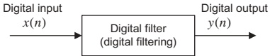
Key Idea
A (linear, time‑invariant, causal) DSP system (digital filter) with input \(x(n)\) and output \(y(n)\) is described by an \(N\)th‑order linear difference equation:
\[ \begin{aligned} y(n) &= b_{0}x(n) + b_{1}x(n-1) + \cdots + b_{M}x(n-M) \\ &\quad - a_{1}y(n-1) - \cdots - a_{N}y(n-N) \end{aligned} \]
Or compactly:
\[ y(n)=\sum_{i=0}^{M} b_i x(n-i) - \sum_{j=1}^{N} a_j y(n-j) \]
- \(\{b_i\}\): feed‑forward (input) coefficients.
- \(\{a_j\}\): feedback (output) coefficients.
- \(M\), \(N\): input/output orders.
Note
Digital filtering = recursively computing \(y(n)\) from the difference equation, given input \(x(n)\) and initial conditions.
Example 6.1 – Manual Digital Filtering (Nonzero ICs)
System:
\[ y(n) = 0.5\,y(n-2) + x(n-1) \]
Identify coefficients:
- \(N=2\), \(M=1\)
- \(a_1=0,\ a_2=-0.5\)
- \(b_0=0,\ b_1=1\)
Case (a) Nonzero initial conditions:
- \(y(-2)=1,\ y(-1)=0,\ x(-1)=-1\)
- Input \(x(n) = (0.5)^n u(n)\)
Compute for \(n=0,1,2,3\):
\[ \begin{aligned} x(0) &= (0.5)^0 u(0) = 1 \\ y(0) &= 0.5\,y(-2) + x(-1) = 0.5\cdot1 + (-1) = -0.5 \end{aligned} \]
\[ \begin{aligned} x(1) &= 0.5 \\ y(1) &= 0.5\,y(-1) + x(0) = 0.5\cdot0 + 1 = 1.0 \end{aligned} \]
\[ \begin{aligned} x(2) &= 0.25 \\ y(2) &= 0.5\,y(0) + x(1) = 0.5\cdot(-0.5) + 0.5 = 0.25 \end{aligned} \]
\[ \begin{aligned} x(3) &= 0.125 \\ y(3) &= 0.5\,y(1) + x(2) = 0.5\cdot1 + 0.25 = 0.75 \end{aligned} \]
Example 6.1 – Effect of Zero Initial Conditions
Case (b) Zero initial conditions:
- \(y(-2)=0,\ y(-1)=0,\ x(-1)=0\)
- Same input: \(x(n) = (0.5)^n u(n)\)
For \(n=0,1,2,3\):
\[ \begin{aligned} x(0) &= 1 \\ y(0) &= 0.5\,y(-2) + x(-1) = 0\cdot1 + 0 = 0 \end{aligned} \]
\[ \begin{aligned} x(1) &= 0.5 \\ y(1) &= 0.5\,y(-1) + x(0) = 0\cdot0 + 1 = 1 \end{aligned} \]
\[ \begin{aligned} x(2) &= 0.25 \\ y(2) &= 0.5\,y(0) + x(1) = 0.5\cdot0 + 0.5 = 0.5 \end{aligned} \]
\[ \begin{aligned} x(3) &= 0.125 \\ y(3) &= 0.5\,y(1) + x(2) = 0.5\cdot1 + 0.25 = 0.75 \end{aligned} \]
Notice:
- Outputs differ at \(n=0,1,2\).
- By \(n=3\), both cases give \(y(3)=0.75\).
Tip
For a stable filter, the effect of initial conditions decays over time.
Example 6.2 – MATLAB Simulation of a DSP System
System:
\[ y(n) = 2x(n) - 4x(n-1) - 0.5y(n-1) - y(n-2) \]
Initial conditions:
- \(y(-2)=1,\ y(-1)=0,\ x(-1)=-1\)
- Input \(x(n) = (0.8)^n u(n)\)
Goal: compute \(y(n)\) for \(n=0,\dots,19\) using MATLAB.
We pre‑allocate vectors for \(y(n)\) and embed initial conditions as extra entries:
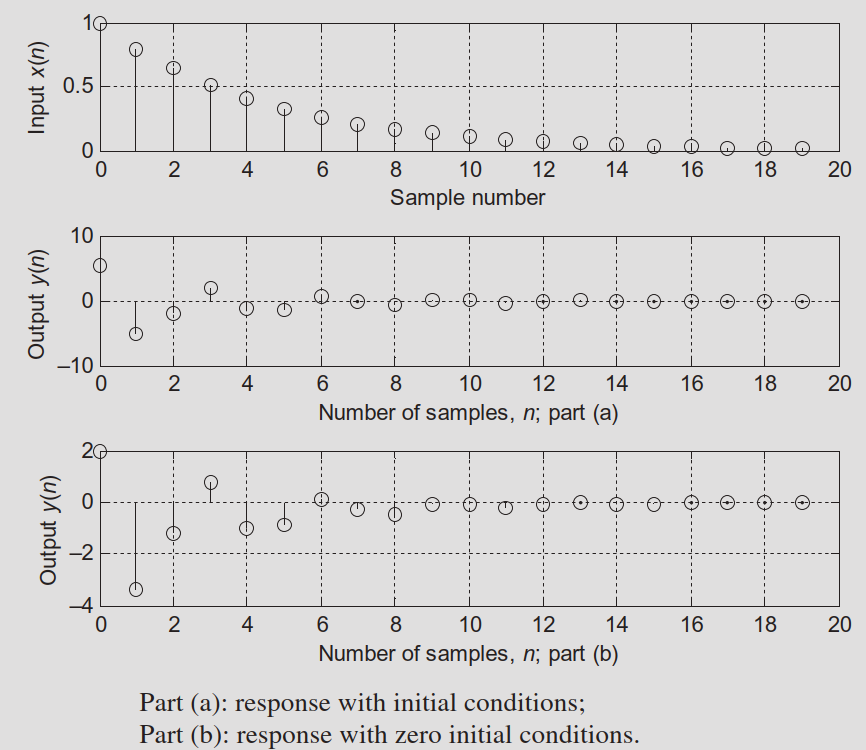
Using MATLAB filter() and filtic()
General DSP form:
Coefficient vectors:
\[ A = [1\ a_1\ a_2\ \dots\ a_N] \] \[ B = [b_0\ b_1\ b_2\ \dots\ b_M] \]
Difference equation:
\[ y(n)=\sum_{i=0}^{M}b_i x(n-i)-\sum_{j=1}^{N} a_j y(n-j) \]
MATLAB syntax with initial conditions:
- \(X_i = [x(-1)\ x(-2)\ \dots]\)
- \(Y_i = [y(-1)\ y(-2)\ \dots]\)
- \(Z_i = [w(-1)\ w(-2)\ \dots]\): internal delay states
Zero initial conditions:
Note
filtic() maps your physical initial conditions \((x(-k), y(-k))\) into the internal state vector required by the filter() implementation (direct‑form II).
Example 6.1 via MATLAB
Recall system:
- \(y(n) = 0.5\,y(n-2) + x(n-1)\)
- So \(B = [0\ 1]\), \(A = [1\ 0\ -0.5]\).
Case (a) Nonzero initial conditions
- \(x = [1\ 0.5\ 0.25\ 0.125]\) for \(n=0,1,2,3\).
- \(X_i = [x(-1)\ x(-2)\dots] = [-1\ 0]\).
- \(Y_i = [y(-1)\ y(-2)\dots] = [0\ 1]\).
Output:
Case (b) Zero initial conditions
Output:
6.2 From Difference Equation to Transfer Function \(H(z)\)
Given the general LTI difference equation with zero initial conditions:
\[ \begin{aligned} y(n) &= b_0 x(n) + b_1 x(n-1) + \cdots + b_M x(n-M) \\ &\quad - a_1 y(n-1) - \cdots - a_N y(n-N) \end{aligned} \]
Take the \(z\)-transform of both sides, using
- \(Z\{x(n-k)\} = X(z) z^{-k}\)
- \(Z\{y(n-k)\} = Y(z) z^{-k}\)
We obtain:
\[ \begin{aligned} Y(z) &= b_0 X(z) + b_1 X(z) z^{-1} + \cdots + b_M X(z) z^{-M} \\ &\quad - a_1 Y(z) z^{-1} - \cdots - a_N Y(z) z^{-N} \end{aligned} \]
Rearrange:
\[ H(z) = \frac{Y(z)}{X(z)} = \frac{b_0 + b_1 z^{-1} + \cdots + b_M z^{-M}} {1 + a_1 z^{-1} + \cdots + a_N z^{-N}} = \frac{B(z)}{A(z)} \]
with
\[ B(z) = b_0 + b_1 z^{-1} + \cdots + b_M z^{-M} \]
\[ A(z) = 1 + a_1 z^{-1} + \cdots + a_N z^{-N} \]
Important
Transfer function definition
\[ H(z) = \frac{\text{$z$-transform of output}}{\text{$z$-transform of input}} = \frac{Y(z)}{X(z)} \]
Example 6.3 – Difference Equation → \(H(z)\)
Given:
\[ y(n) = x(n) - x(n-2) - 1.3\,y(n-1) - 0.36\,y(n-2) \]
- Take \(z\)-transform (zero ICs):
\[ Y(z) = X(z) - X(z)z^{-2} - 1.3 Y(z)z^{-1} - 0.36 Y(z)z^{-2} \]
- Group \(Y(z)\) and \(X(z)\):
\[ Y(z)\big(1 + 1.3z^{-1} + 0.36z^{-2}\big) = (1 - z^{-2})X(z) \]
- Transfer function:
\[ H(z) = \frac{Y(z)}{X(z)} = \frac{1 - z^{-2}}{1 + 1.3z^{-1} + 0.36z^{-2}} \]
So:
- \(A(z) = 1 + 1.3z^{-1} + 0.36z^{-2}\)
- \(B(z) = 1 - z^{-2}\)
Example 6.4 – FIR System
Given:
\[ y(n) = x(n) - 0.5x(n-1) + 0.36x(n-2) \]
Take \(z\)-transform:
\[ Y(z) = X(z) - 0.5 X(z)z^{-1} + 0.36 X(z)z^{-2} \]
So:
\[ H(z) = \frac{Y(z)}{X(z)} = 1 - 0.5z^{-1} + 0.36z^{-2} \]
- \(A(z) = 1\)
- \(B(z) = 1 - 0.5z^{-1} + 0.36z^{-2}\)
Tip
No feedback terms (\(a_j = 0\)) ⇒ the impulse response has finite length ⇒ FIR filter.
Example 6.5 – From \(H(z)\) Back to Difference Equation
(a)
Given:
\[ H(z) = \frac{z^{2} - 1}{z^{2} + 1.3z + 0.36} \]
- Divide numerator/denominator by \(z^2\):
\[ H(z) = \frac{(z^{2}-1)/z^{2}}{(z^{2} + 1.3z + 0.36)/z^{2}} = \frac{1 - z^{-2}}{1 + 1.3z^{-1} + 0.36z^{-2}} \]
- Write \(Y(z)/X(z)\):
\[ \frac{Y(z)}{X(z)} = \frac{1 - z^{-2}}{1 + 1.3z^{-1} + 0.36z^{-2}} \]
- Cross‑multiply:
\[ Y(z)(1 + 1.3z^{-1} + 0.36z^{-2}) = X(z)(1 - z^{-2}) \]
- Inverse \(z\)-transform (using shift property):
\[ y(n) + 1.3 y(n-1) + 0.36 y(n-2) = x(n) - x(n-2) \]
Rearranged:
\[ y(n) = x(n) - x(n-2) - 1.3 y(n-1) - 0.36 y(n-2) \]
Exactly the system from Example 6.3.
(b)
Given:
\[ H(z) = \frac{z^{2} - 0.5z + 0.36}{z^{2}} \]
Divide by \(z^{2}\):
\[ H(z) = \frac{Y(z)}{X(z)} = 1 - 0.5z^{-1} + 0.36z^{-2} \]
Thus:
\[ Y(z) = X(z) - 0.5 z^{-1}X(z) + 0.36 z^{-2}X(z) \]
Inverse \(z\)-transform:
\[ y(n) = x(n) - 0.5 x(n-1) + 0.36 x(n-2) \]
Same as Example 6.4.
Factorized Pole–Zero Form of \(H(z)\)
Any rational \(H(z)\) can be factored as:
\[ H(z) = \frac{b_0 (z - z_1)(z - z_2)\cdots(z - z_M)} {(z - p_1)(z - p_2)\cdots(z - p_N)} \]
- \(\{z_i\}\): zeros (roots of numerator).
- \(\{p_i\}\): poles (roots of denominator).
Example 6.6
Given:
\[ H(z) = \frac{1 - z^{-2}}{1 + 1.3z^{-1} + 0.36 z^{-2}} \]
Multiply numerator & denominator by \(z^{2}\):
\[ H(z) = \frac{z^{2} - 1}{z^{2} + 1.3z + 0.36} \]
Solve roots:
- \(z^{2} - 1 = 0 \Rightarrow z = 1,\ -1\) (zeros).
- \(z^{2} + 1.3z + 0.36 = 0 \Rightarrow z = -0.4,\ -0.9\) (poles).
Pole–zero form:
\[ H(z) = \frac{(z - 1)(z + 1)}{(z + 0.4)(z + 0.9)} \]
6.2.1 Impulse, Step, and System Responses
Impulse response \(h(n)\)
Response to input \(x(n) = \delta(n)\).
With \(X(z) = Z\{\delta(n)\} = 1\):
\[ h(n) = Z^{-1}\{H(z) X(z)\} = Z^{-1}\{H(z)\} \]
Step response (to \(x(n)=u(n)\), zero ICs):
\(X(z) = Z\{u(n)\} = \dfrac{z}{z-1}\).
\[ y(n) = Z^{-1}\Big\{ H(z) \frac{z}{z-1} \Big\} \]
General system response to arbitrary \(x(n)\):
In \(z\)-domain:
\[ Y(z) = H(z) X(z) \]
In time domain:
\[ y(n) = Z^{-1}\{Y(z)\} \]
Note
Equivalently, in time domain, for LTI systems:
\[ y(n) = (h * x)(n) = \sum_{k=-\infty}^{\infty} h(k)\,x(n-k) \]
(convolution).
Example 6.7 – Responses of a First‑Order System
System transfer function:
\[ H(z) = \frac{z+1}{z-0.5} \]
We will find:
- Impulse response \(h(n)\).
- Step response to \(x(n)=u(n)\).
- Response to \(x(n) = (0.25)^n u(n)\).
6.7 (a) Impulse Response
We rewrite:
\[ \frac{H(z)}{z} = \frac{z+1}{z(z-0.5)} = \frac{A}{z} + \frac{B}{z-0.5} \]
Find residues:
At \(z=0\):
\[ A = \left. \frac{z+1}{z-0.5} \right|_{z=0} = \frac{0+1}{0-0.5} = -2 \]
At \(z=0.5\):
\[ B = \left. \frac{z+1}{z} \right|_{z=0.5} = \frac{1.5}{0.5} = 3 \]
Thus:
\[ \frac{H(z)}{z} = -\frac{2}{z} + \frac{3}{z-0.5} \]
Multiply both sides by \(z\):
\[ H(z) = -2 + \frac{3z}{z-0.5} \]
Inverse \(z\)-transform:
- \(-2 \leftrightarrow -2\,\delta(n)\).
- \(\dfrac{z}{z-0.5} \leftrightarrow (0.5)^n u(n)\).
So:
\[ h(n) = -2\,\delta(n) + 3 (0.5)^n u(n) \]
6.7 (b) Step Response
Step input: \(x(n) = u(n)\), \(X(z) = \dfrac{z}{z-1}\).
Thus:
\[ Y(z) = H(z) X(z) = \frac{z+1}{z-0.5}\cdot\frac{z}{z-1} \]
Write:
\[ \frac{Y(z)}{z} = \frac{z+1}{(z-0.5)(z-1)} = \frac{A}{z-0.5} + \frac{B}{z-1} \]
Residues:
At \(z=0.5\):
\[ A = \left. \frac{z+1}{z-1} \right|_{z=0.5} = \frac{1.5}{-0.5} = -3 \]
At \(z=1\):
\[ B = \left. \frac{z+1}{z-0.5} \right|_{z=1} = \frac{2}{0.5} = 4 \]
So:
\[ Y(z) = \frac{-3z}{z-0.5} + \frac{4z}{z-1} \]
Inverse \(z\)-transform:
- \(\dfrac{z}{z-0.5} \leftrightarrow (0.5)^n u(n)\).
- \(\dfrac{z}{z-1} \leftrightarrow u(n)\).
Hence step response:
\[ y(n) = -3 (0.5)^n u(n) + 4 u(n) \]
6.7 (c) Response to \(x(n) = (0.25)^n u(n)\)
Input:
\[ X(z) = Z\{(0.25)^n u(n)\} = \frac{z}{z-0.25} \]
Then:
\[ Y(z) = H(z) X(z) = \frac{z+1}{z-0.5}\cdot\frac{z}{z-0.25} = \frac{z(z+1)}{(z-0.5)(z-0.25)} \]
Partial fraction:
\[ \frac{Y(z)}{z} = \frac{z+1}{(z-0.5)(z-0.25)} = \frac{A}{z-0.5} + \frac{B}{z-0.25} \]
Solving yields:
\[ Y(z) = \frac{6z}{z-0.5} - \frac{5z}{z-0.25} \]
Inverse \(z\)-transform:
\[ y(n) = 6(0.5)^n u(n) - 5(0.25)^n u(n) \]
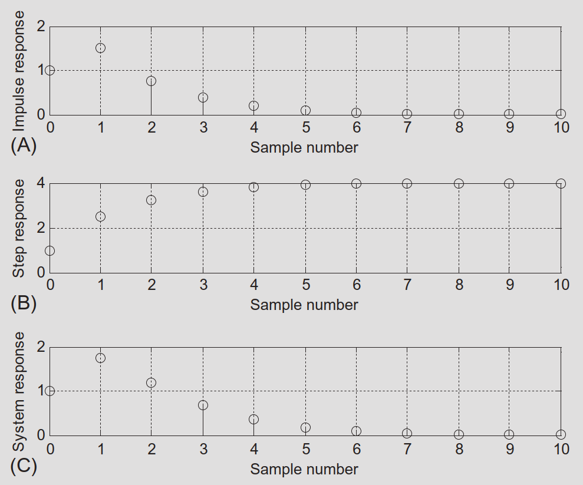
- Top: impulse response \(h(n)\).
- Middle: step response.
- Bottom: response to \((0.25)^n u(n)\).
6.3 The \(z\)-Plane Pole–Zero Plot and Stability
z-plane basics
- Horizontal axis: \(\Re\{z\}\).
- Vertical axis: \(\Im\{z\}\).
- The unit circle \(|z|=1\) divides the plane.
- Poles: marked with “×”.
- Zeros: marked with “○”.
We plot poles and zeros of \(H(z)\) to analyze:
- Stability (pole locations).
- Frequency response shape.
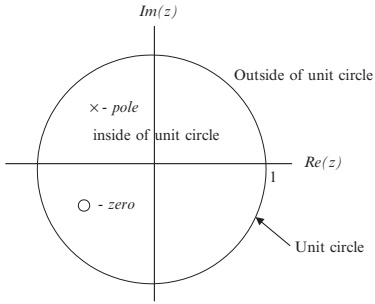
Example 6.8 – Pole–Zero Plot
Given:
\[ H(z) = \frac{z^{-1}-0.5z^{-2}}{1 + 1.2z^{-1} + 0.45z^{-2}} \]
Convert to advanced form (positive powers) by multiplying numerator and denominator by \(z^{2}\):
\[ H(z) = \frac{(z^{-1}-0.5z^{-2})z^{2}}{(1+1.2z^{-1}+0.45z^{-2})z^{2}} = \frac{z - 0.5}{z^{2} + 1.2z + 0.45} \]
Find zeros and poles:
Zero: solve \(z - 0.5 = 0\) ⇒ \(z_1 = 0.5\).
Poles: solve \(z^{2} + 1.2z + 0.45 = 0\):
\[ p_1 = -0.6 + j0.3,\quad p_2 = -0.6 - j0.3 \]
Magnitude of poles:
\[ |p_{1,2}| = \sqrt{(-0.6)^2 + (0.3)^2} \approx 0.671 < 1 \]
So poles are inside the unit circle.
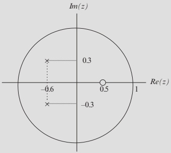
Pole–zero form:
\[ H(z) = \frac{z-0.5}{(z + 0.6 - j0.3)(z + 0.6 + j0.3)} \]
Mapping Between \(s\)-Plane and \(z\)-Plane
Continuous‑time sampled signal (sampling period \(T\)):
\[ x_s(t) = \sum_{n=0}^{\infty} x(nT)\,\delta(t-nT) \]
Laplace transform: using \(L\{\delta(t-nT)\}=e^{-nTs}\):
\[ X_s(s) = \sum_{n=0}^{\infty} x(nT)e^{-nTs} \]
One‑sided \(z\)-transform of sequence \(x(n)\):
\[ X(z) = \sum_{n=0}^{\infty} x(n) z^{-n} \]
Comparing terms, we see the mapping:
\[ z = e^{sT} \]
Let \(s = -\alpha \pm j\omega\):
\[ z = e^{-\alpha T \pm j\omega T} = e^{-\alpha T} \angle \pm\omega T \]
Conclusions:
- \(\alpha > 0\) ⇒ left half \(s\)-plane (stable continuous system) maps to \(|z| = e^{-\alpha T} < 1\) = inside the unit circle.
- \(\alpha = 0\) ⇒ \(s = j\omega\) axis maps to \(|z|=1\) = unit circle.
- \(\alpha < 0\) ⇒ unstable continuous poles map outside unit circle.
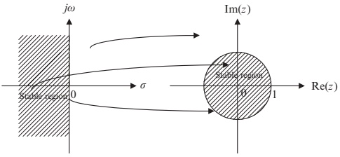
Stability Rules for DSP Systems
A digital system is BIBO stable if every bounded input produces a bounded output.
For a rational \(H(z)\), stability is determined by pole locations:
- Stable:
- All poles of \(H(z)\) are inside the unit circle.
- Unstable:
- At least one pole is outside the unit circle.
- Marginally stable:
- Outermost pole(s) lie on the unit circle and are first‑order.
- Unstable (special case):
- Outermost pole(s) on the unit circle are multiple‑order (e.g., double pole).
- Zeros do not affect stability (only poles matter).
Illustrations in Fig. 6.9:
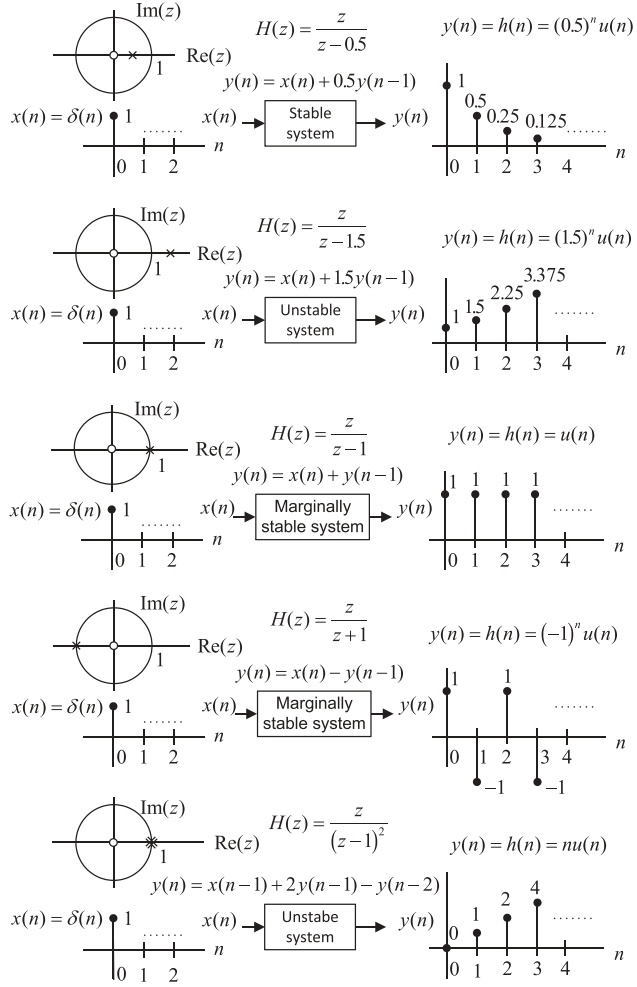
Example 6.9 – Stability from Pole–Zero Plots
We are given several transfer functions and asked to:
- Sketch z‑plane pole–zero plots.
- Determine stability.
(a)
\[ H(z) = \frac{z+0.5}{(z-0.5)(z^2 + z + 0.5)} \]
- Zero: \(z=-0.5\).
- Poles:
\(z=0.5\), \(|z|=0.5 < 1\).
Roots of \(z^2 + z + 0.5 = 0\):
\[ z = -0.5 \pm j0.5,\quad |z| = \sqrt{0.5^2 + 0.5^2} \approx 0.707 < 1 \]
All poles inside unit circle ⇒ stable.
(b)
\[ H(z) = \frac{z^2 + 0.25}{(z-0.5)(z^2 + 3z + 2.5)} \]
- Zeros: \(z = \pm j0.5\).
- Poles:
\(z=0.5\), \(|z|=0.5<1\).
Roots of \(z^2 + 3z + 2.5 = 0\):
\[ z = -1.5 \pm j0.5,\quad |z| \approx 1.581 > 1 \]
Some poles outside unit circle ⇒ unstable.
(c)
\[ H(z) = \frac{z+0.5}{(z-0.5)(z^2 + 1.4141z + 1)} \]
- Zero: \(z=-0.5\).
- Poles:
\(z = 0.5,\ |z|=0.5<1\).
Roots of \(z^2 + 1.4141z + 1 = 0\):
\[ z \approx -0.707 \pm j0.707,\quad |z|\approx 1 \]
Outermost poles on unit circle, first order ⇒ marginally stable.
(d)
\[ H(z) = \frac{z^{2}+z+0.5}{(z-1)^2 (z+1)(z-0.6)} \]
- Zeros: \(z = -0.5 \pm j0.5\).
- Poles:
- \(z=1\) (double pole), \(|z|=1\).
- \(z=-1\), \(|z|=1\).
- \(z=0.6\), \(|z|=0.6<1\).
Outermost pole at \(z=1\) is second order on unit circle ⇒ unstable.
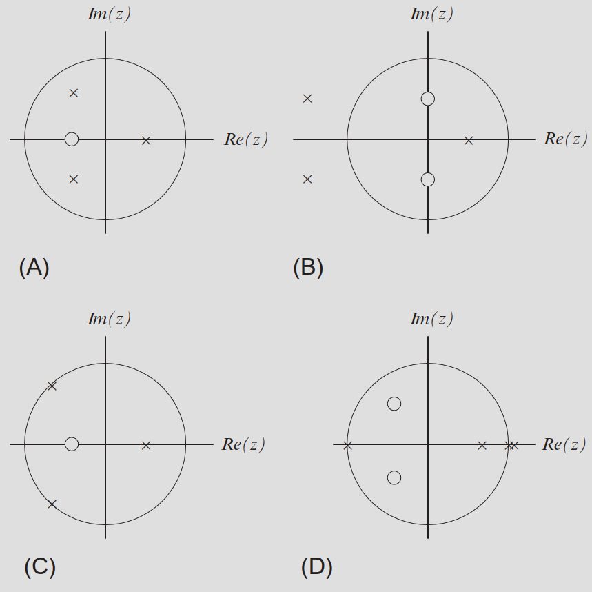
6.4 Digital Filter Frequency Response
From analog to digital frequency response:
- Analog LTI system: \(H(s)\).
- Steady‑state frequency response: \(H(j\omega) = H(s)\big|_{s=j\omega}\).
For digital systems:
- Use mapping \(z = e^{sT}\).
- On \(j\omega\) axis → \(z = e^{j\omega T}\).
Thus digital frequency response:
\[ H(e^{j\omega T}) = H(z)\big|_{z=e^{j\omega T}} = \big|H(e^{j\omega T})\big| \angle H(e^{j\omega T}) \]
Define normalized digital radian frequency:
\[ \Omega = \omega T \]
Then we write:
\[ H(e^{j\Omega}) = H(z)\big|_{z=e^{j\Omega}} = \big|H(e^{j\Omega})\big| \angle H(e^{j\Omega}) \]
Note
In DSP, we typically work with \(\Omega \in [0,\pi]\) radians, corresponding to physical frequencies \(f \in [0, f_s/2]\).
Transient vs Steady‑State Response to a Sinusoid
Consider a digital filter with transfer function \(H(z)\) and sinusoidal input:
- Input amplitude: \(K\).
- Frequency: \(\Omega\).
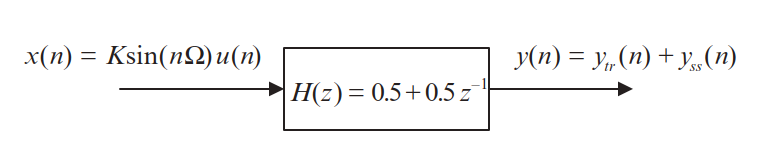
We can show (by partial fractions and inverse \(z\)-transform, as in the text) that the output has form:
\[ y(n) = y_{tr}(n) + y_{ss}(n) \]
where
- \(y_{tr}(n)\): transient response (decays with \(n\) for a stable system).
- \(y_{ss}(n)\): steady‑state sinusoid at same frequency.
General steady‑state result:
For input \(x(n) = K\sin(\Omega n)\,u(n)\),
\[ y_{ss}(n) = K\big|H(e^{j\Omega})\big| \sin\big(n\Omega + \angle H(e^{j\Omega})\big)u(n) \]
So:
- Magnitude response: \(|H(e^{j\Omega})|\) = ratio of output amplitude to input amplitude.
- Phase response: \(\angle H(e^{j\Omega})\) = phase shift between output and input.
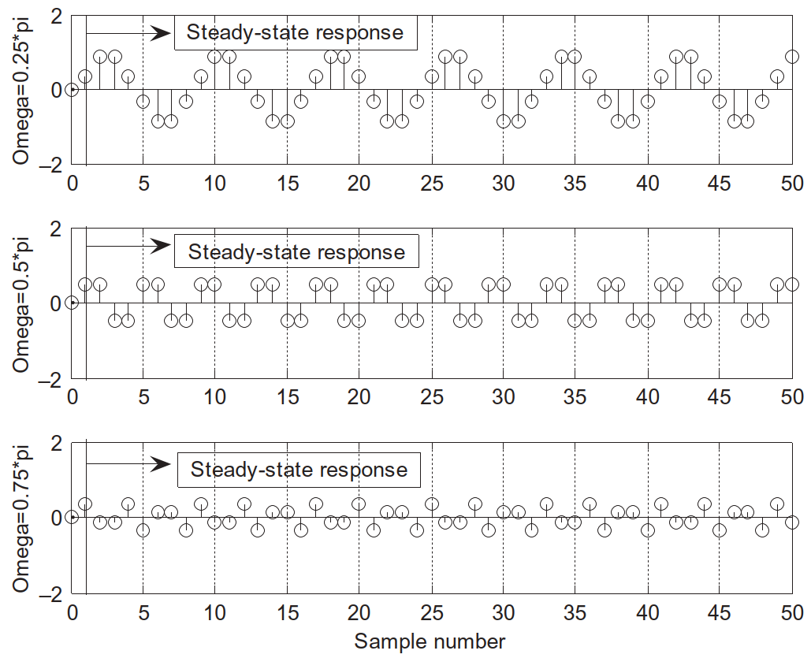
Properties of \(H(e^{j\Omega})\)
1. Periodicity
From Euler’s identity:
\[ e^{j(\Omega + k2\pi)} = e^{j\Omega} \]
for integer \(k\). Thus:
- \(H(e^{j\Omega}) = H(e^{j(\Omega + k2\pi)})\).
- \(|H(e^{j\Omega})| = |H(e^{j(\Omega + k2\pi)})|\).
- \(\angle H(e^{j\Omega}) = \angle H(e^{j(\Omega + k2\pi)})\).
2. Symmetry (for real‑coefficient filters)
- Magnitude: \(|H(e^{-j\Omega})| = |H(e^{j\Omega})|\).
- Phase: \(\angle H(e^{-j\Omega}) = -\angle H(e^{j\Omega})\).
Because of sampling:
Maximum useful frequency is the folding frequency \(f_s/2\).
Corresponding normalized radian frequency:
\[ \Omega = \omega T = 2\pi \frac{f_s}{2} T = \pi \]
Thus we only need \(\Omega \in [0,\pi]\).
Conversion to Hz:
\[ f = \frac{\Omega}{2\pi} f_s \]
Magnitude in decibels:
\[ |H(e^{j\Omega})|_{\text{dB}} = 20\log_{10}\big(|H(e^{j\Omega})|\big) \]
Example 6.10 – Frequency Response of a Simple Averager (Lowpass)
System:
\[ y(n) = 0.5x(n) + 0.5x(n-1) \]
This is a 2‑point moving average with equal weights.
- \(z\)-transform:
\[ Y(z) = 0.5X(z) + 0.5z^{-1}X(z) \]
- Transfer function:
\[ H(z) = \frac{Y(z)}{X(z)} = 0.5 + 0.5z^{-1} \]
- Frequency response: substitute \(z=e^{j\Omega}\):
\[ \begin{aligned} H(e^{j\Omega}) &= 0.5 + 0.5 e^{-j\Omega} \\ &= 0.5 + 0.5\cos\Omega - j0.5\sin\Omega \end{aligned} \]
- Magnitude and phase:
\[ |H(e^{j\Omega})| = \sqrt{(0.5+0.5\cos\Omega)^2 + (0.5\sin\Omega)^2} \]
\[ \angle H(e^{j\Omega}) = \tan^{-1}\left(\frac{-0.5\sin\Omega}{0.5+0.5\cos\Omega}\right) \]
Example 6.10 – Numerical Values
Sampling rate \(f_s = 8000\) Hz.
| \(\Omega\) (rad) | \(f = \frac{\Omega}{2\pi}f_s\) (Hz) | \(|H(e^{j\Omega})|\) | \(|H(e^{j\Omega})|_{\text{dB}}\) | \(\angle H(e^{j\Omega})\) |
|---|---|---|---|---|
| 0 | 0 | 1.000 | 0 dB | \(0^\circ\) |
| \(0.25\pi\) | 1000 | 0.924 | −0.687 dB | −22.5° |
| \(0.50\pi\) | 2000 | 0.707 | −3.012 dB | −45° |
| \(0.75\pi\) | 3000 | 0.383 | −8.336 dB | −67.5° |
| \(1.00\pi\) | 4000 | 0.000 | −∞ | −90° |
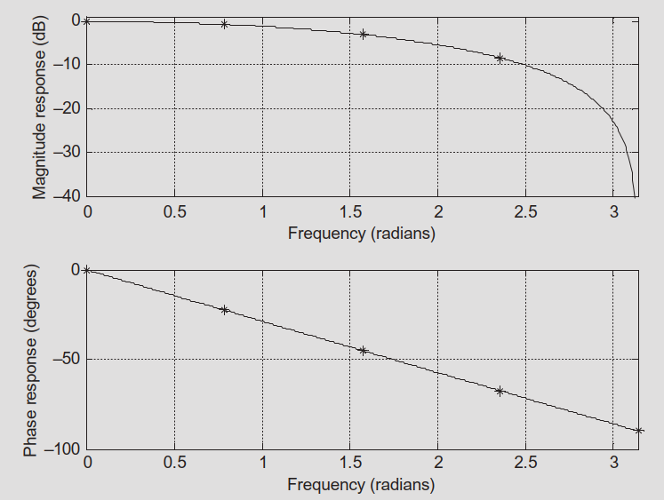
- As frequency increases, magnitude decreases.
- Filter passes low frequencies, attenuates high frequencies ⇒ lowpass filter.
- Phase is approximately linear in the main band.
Example 6.10 – Periodicity and Symmetry
Using \(\Omega = 0.25\pi + 2\pi\):
\[ |H(e^{j(0.25\pi + 2\pi)})| = |H(e^{j0.25\pi})| = 0.924 \]
\[ \angle H(e^{j(0.25\pi + 2\pi)}) = \angle H(e^{j0.25\pi}) = -22.5^\circ \]
Using \(\Omega = -0.25\pi\):
\[ |H(e^{-j0.25\pi})| = |H(e^{j0.25\pi})| = 0.924 \]
\[ \angle H(e^{-j0.25\pi}) = -\angle H(e^{j0.25\pi}) = +22.5^\circ \]
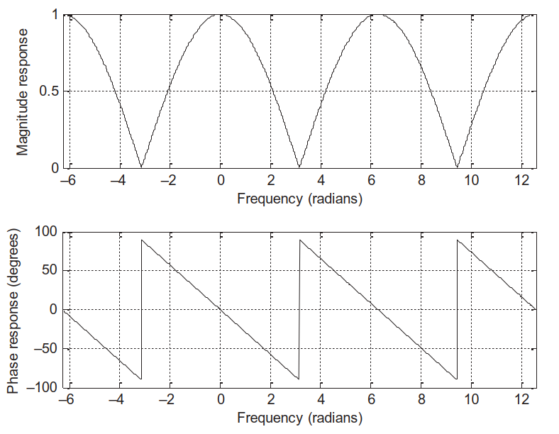
- Magnitude and phase are periodic with \(2\pi\).
- Over \([- \pi, \pi]\): magnitude is even, phase is odd.
Example 6.11 – First‑Order Highpass‑Like Response
System:
\[ y(n) = x(n) - 0.5 y(n-1) \]
- \(z\)-transform:
\[ Y(z) = X(z) - 0.5z^{-1}Y(z) \]
- Transfer function:
\[ H(z) = \frac{Y(z)}{X(z)} = \frac{1}{1 + 0.5z^{-1}} = \frac{z}{z + 0.5} \]
- Frequency response: \(z = e^{j\Omega}\):
\[ H(e^{j\Omega}) = \frac{1}{1 + 0.5e^{-j\Omega}} = \frac{1}{1 + 0.5\cos\Omega - j0.5\sin\Omega} \]
- Magnitude and phase:
\[ |H(e^{j\Omega})| = \frac{1}{\sqrt{(1+0.5\cos\Omega)^2 + (0.5\sin\Omega)^2}} \]
\[ \angle H(e^{j\Omega}) = -\tan^{-1}\left(\frac{-0.5\sin\Omega}{1+0.5\cos\Omega}\right) \]
Example 6.11 – Numerical Values
Sampling rate \(f_s = 8000\) Hz.
| \(\Omega\) (rad) | \(f=\frac{\Omega}{2\pi}f_s\) (Hz) | \(|H(e^{j\Omega})|\) | \(|H(e^{j\Omega})|_{\text{dB}}\) | \(\angle H(e^{j\Omega})\) |
|---|---|---|---|---|
| 0 | 0 | 0.670 | −3.479 dB | \(0^\circ\) |
| \(0.25\pi\) | 1000 | 0.715 | −2.914 dB | 14.64° |
| \(0.50\pi\) | 2000 | 0.894 | −0.973 dB | 26.57° |
| \(0.75\pi\) | 3000 | 1.357 | 2.652 dB | 28.68° |
| \(1.00\pi\) | 4000 | 2.000 | 6.021 dB | \(0^\circ\) |
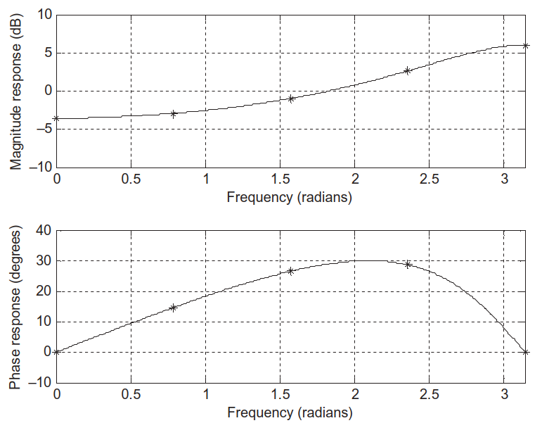
- Magnitude increases with frequency ⇒ highpass‑like behavior.
- Useful for removing low‑frequency drift (e.g., sensor bias).
FIR vs IIR Systems
Starting from the general difference equation:
\[ y(n) = \sum_{i=0}^{M} b_i x(n-i) - \sum_{j=1}^{N} a_j y(n-j) \]
If all \(a_j = 0\), we get:
\[ y(n) = \sum_{i=0}^{M} b_i x(n-i) \]
- The impulse response \(h(n)\) is just \(\{b_0, b_1, \dots, b_M\}\), and zero outside that range.
- Finite‑length \(h(n)\) ⇒ Finite Impulse Response (FIR).
- \(H(z) = B(z)\) with denominator \(A(z) = 1\).
If any \(a_j \neq 0\):
- Impulse response \(h(n)\) generally has infinite duration.
- \(H(z) = \dfrac{B(z)}{A(z)}\), \(A(z) \neq 1\).
- This is an Infinite Impulse Response (IIR) filter.
Tip
Summary
- FIR: no feedback, always BIBO stable, often used for linear‑phase designs.
- IIR: uses feedback, can achieve sharp responses with fewer coefficients, but stability must be checked (poles inside unit circle).
Summary / Key Points
- Difference equations are the time‑domain description of DSP systems (digital filters), involving past and present inputs and outputs.
- Digital filtering = recursively computing \(y(n)\) from the difference equation and initial conditions.
- The transfer function \(H(z) = \dfrac{Y(z)}{X(z)} = \dfrac{B(z)}{A(z)}\) fully characterizes an LTI discrete‑time system in the \(z\)-domain.
- You can convert between difference equations and \(H(z)\) (via \(z\)-transform and its inverse).
- Impulse response \(h(n)\) is \(Z^{-1}\{H(z)\}\).
- Step and general responses follow from \(Y(z) = H(z)X(z)\) and inverse \(z\)-transform.
- Poles and zeros plotted in the \(z\)-plane determine stability and shape the frequency response.
- Stable: all poles inside unit circle.
- Marginally stable: outer poles on unit circle, first order.
- Unstable: any pole outside unit circle or multiple poles on unit circle.
- The digital frequency response is \(H(e^{j\Omega}) = H(z)\big|_{z=e^{j\Omega}}\):
- \(|H(e^{j\Omega})|\) gives gain vs frequency.
- \(\angle H(e^{j\Omega})\) gives phase shift vs frequency.
- FIR filters (no feedback) have finite impulse responses and are always stable; IIR filters (with feedback) have infinite impulse responses and require pole‑location stability checks.
Formulas Summary
General LTI DSP system:
\[ y(n) = \sum_{i=0}^{M} b_i x(n-i) - \sum_{j=1}^{N} a_j y(n-j) \]
Transfer function:
\[ H(z) = \frac{Y(z)}{X(z)} = \frac{b_0 + b_1 z^{-1} + \cdots + b_M z^{-M}} {1 + a_1 z^{-1} + \cdots + a_N z^{-N}} = \frac{B(z)}{A(z)} \]
Pole–zero factorization:
\[ H(z) = \frac{b_0 (z - z_1)\cdots(z - z_M)} {(z - p_1)\cdots(z - p_N)} \]
Impulse response:
\[ h(n) = Z^{-1}\{H(z)\} \]
General response:
\[ Y(z) = H(z)X(z),\quad y(n) = Z^{-1}\{Y(z)\} \]
Mapping between domains:
\[ z = e^{sT},\quad s = -\alpha \pm j\omega \]
Stable continuous pole (\(\alpha>0\)) ⇒ \(|z| = e^{-\alpha T} < 1\)
Digital frequency response:
\[ H(e^{j\Omega}) = H(z)\Big|_{z=e^{j\Omega}},\quad \Omega = \omega T \]
Magnitude (dB) and phase:
\[ |H(e^{j\Omega})|_{\text{dB}} = 20\log_{10}\big(|H(e^{j\Omega})|\big) \]
\[ \angle H(e^{j\Omega}) = \arg\big(H(e^{j\Omega})\big) \]
\[ y_{ss}(n) = K|H(e^{j\Omega})|\sin\big(n\Omega + \angle H(e^{j\Omega})\big)u(n) \]
FIR vs IIR:
- FIR: \(a_j = 0\) ⇒ \(H(z) = B(z)\), finite‑length \(h(n)\).
- IIR: at least one \(a_j \neq 0\) ⇒ \(H(z) = \dfrac{B(z)}{A(z)}\), infinite‑length \(h(n)\).
Digital Signal Processing Systems – Interactive Deck
Warm‑Up: Simulating a Simple Difference Equation
We start from the system in Example 6.1:
\[ y(n) = 0.5\,y(n-2) + x(n-1) \]
Input: (x(n) = (0.5)^n u(n)).
Use Python to compute the first few samples and compare to the textbook.
Interactive: Change Initial Conditions
Use sliders to switch between nonzero and zero initial conditions and instantly see the outputs.
Interactive: Build a Generic LTI Filter Simulator
Now let’s implement a general LTI filter:
\[ y(n) = \sum_{i=0}^{M} b_i x(n-i) - \sum_{j=1}^{N} a_j y(n-j) \]
We will allow students to edit (a_j), (b_i), and choose an input signal.
viewof b_coeffs = Inputs.text(
"1.0, -0.5, 0.25",
{label: "b coefficients (comma-separated, b0, b1,...,bM)"}
)
viewof a_coeffs = Inputs.text(
"0.0, 0.5",
{label: "a coefficients (comma-separated, a1,...,aN) [enter 0.0 for none]"}
)
viewof input_type = Inputs.select(
["unit step", "exponential 0.8^n", "impulse"],
{label: "Input x(n) type", value: "unit step"}
)
viewof N_len = Inputs.range(
[10, 200],
{step: 10, value: 100, label: "Number of samples"}
)Interactive: Poles, Zeros, and Stability
We now plot poles and zeros in the (z)-plane and classify stability.
User‑Defined (H(z) = )
Reactive: Frequency Response from Coefficients
We now link pole–zero structure with frequency response (H(e^{j})).
Students choose FIR or IIR coefficients and see (|H(e^{j})|) and phase vs frequency.
viewof B_freq = Inputs.text(
"0.5, 0.5",
{label: "B(z) coefficients for freq response (b0,...,bM, highest power to constant)"}
)
viewof A_freq = Inputs.text(
"1.0, 0.0",
{label: "A(z) coefficients for freq response (a0,...,aN, highest to constant) [a0 must be 1 for proper H(z)]"}
)
viewof fs = Inputs.range(
[1_000, 24_000],
{step: 1_000, value: 8_000, label: "Sampling frequency f_s (Hz)"}
)
viewof log_scale = Inputs.checkbox(
["Show magnitude in dB"],
{label: "Options", value: []}
)Interactive: Steady‑State Sinusoidal Response
We now connect (H(e^{j})) to the time‑domain steady‑state response.
For input:
\[ x(n) = K \sin(\Omega n) \]
The steady‑state output is:
\[ y_{ss}(n) = K |H(e^{j\Omega})| \sin\big(\Omega n + \angle H(e^{j\Omega})\big) \]
Let’s pick a specific filter (e.g., Example 6.10’s 2‑point averager) and vary input frequency.
viewof K_amp = Inputs.range(
[0.1, 2.0],
{step: 0.1, value: 1.0, label: "Input amplitude K"}
)
viewof norm_Omega = Inputs.range(
[0.0, 1.0],
{step: 0.05, value: 0.25, label: "Normalized frequency Ω/π (0 to 1)"}
)
viewof N_time = Inputs.range(
[20, 200],
{step: 10, value: 80, label: "Number of time samples for plot"}
)Interactive: FIR vs IIR Impulse Response Comparison
Compare a simple FIR and a simple IIR filter’s impulse responses side by side.
viewof FIR_b = Inputs.text(
"0.5, 0.5",
{label: "FIR b coefficients (highest power to constant)"}
)
viewof IIR_B = Inputs.text(
"1.0",
{label: "IIR numerator B(z) (highest power to constant)"}
)
viewof IIR_A = Inputs.text(
"1.0, 0.5",
{label: "IIR denominator A(z) (highest to constant, a0=1)"}
)
viewof N_imp = Inputs.range(
[10, 200],
{step: 10, value: 80, label: "Impulse response length N"}
)Wrap‑Up: What to Explore Next
Use these interactive blocks to:
- Experiment with different (a_j, b_i) to design simple low‑pass, high‑pass, and band‑pass filters.
- See how poles close to the unit circle create longer transients and sharper frequency responses.
- Relate (H(z)), poles/zeros, and (H(e^{j})) hands‑on.